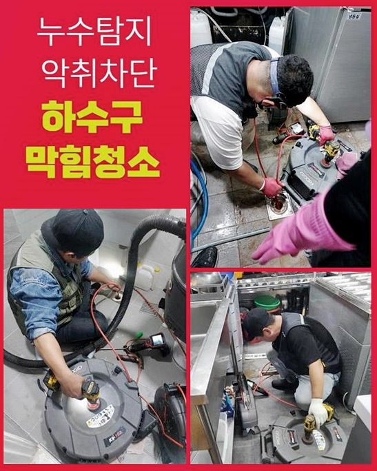
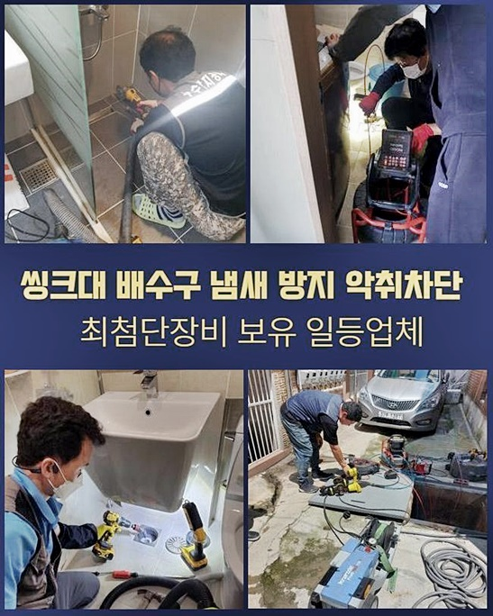
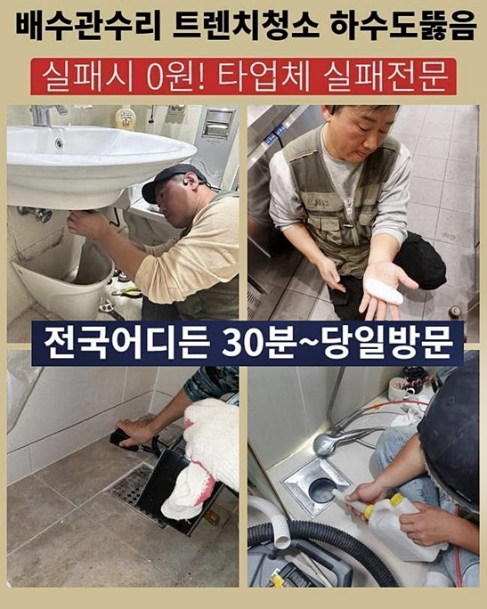
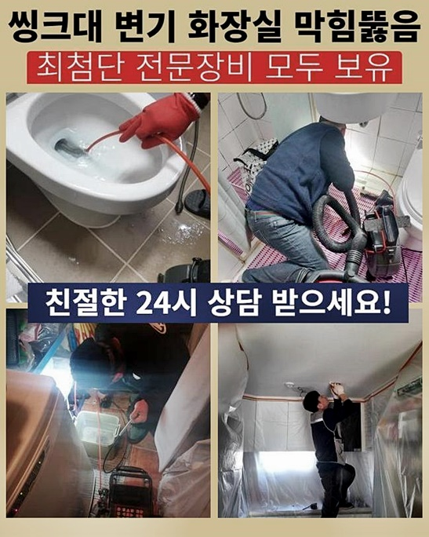
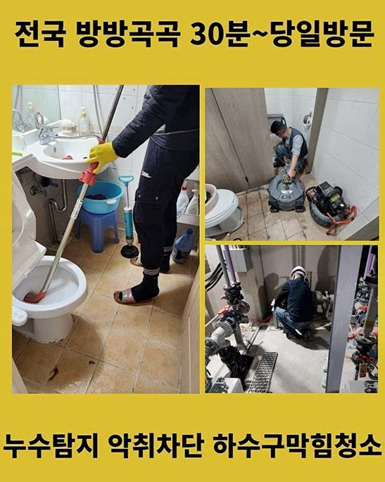
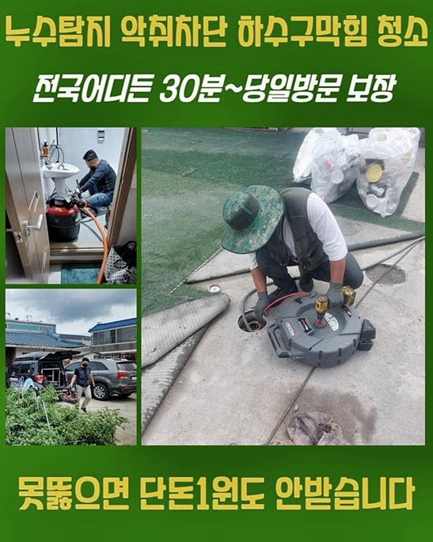

🏠 부천 소사본동변기배관막힘 괴안동 악취차단 누수탐지
용인 싱크대막힘 전문 시공 후기

📋 작업 개요
- 위치: 용인
- 서비스 유형: 싱크대막힘, 변기막힘, 하수구막힘, 배관막힘, 누수수리, 역류해결, 뚫는업체, 고압세척, 설비공사, 악취차단
- 작업 일시: 2024. 7. 16. 17:09
- 업체명: 하수구수사대 (010-5615-2118)
🔍 문제 상황
부천 소사본동변기배관막힘 괴안동 악취차단 누수탐지
일상영위시 하수구시스템은 필수적인 존재인데요
갑작스럽게 배수구가막혀 정상적으로 배수가되지 않으면 불편할거에요
인터넷서칭으로 방법을알아내 가벼운조치로 시도할순있지만 오염물로인해 완전하게 막혀버렸다면 전문가를 호출해서 처리하시는게 확고한 해결책이랍니다
저희업체를 통하여 문의하신분들 사례중 얼마전 막힘때문에 상당한불편을 겪으신분들도 있으셨어요
이번고객은 인테리어에대한 공사가이루어진지 얼마지나지 않았는데 이런일이 발현된것인지 당황하셨어요
신속한작업을 요청하셨으며 저희업체는 전문기계들을 챙겨서 신속한출동으로 방문할수있었죠
대부분으로 가정집에선 화장실쪽이나 씽크대쪽에서 하수관막힘이 빈번하게 발생하고있어요
이런경우에는 여러가지의 불편함들이 생길수가있죠
씽크대에서 물을이용하기 어려운경우에는 일상을 영위하기어려운 상태가되는데요
막힘현상을 처리하기위해 고객님은 주말시간에 내방을원하셨고 원하는 시간대에맞춰 내방해드렸죠
빨간날까지 가리지않고 밤늦게도 작업해드릴수있어 시간관계없이 연락만주신다면 내방드릴준비가 되어있어요

🔎 원인 분석
💡 전문가 진단: 정밀 진단 장비를 사용하여 슬러지의 고착 여부를 판명하고 타격/세척 작업을 실시했습니다.
얼마전부터 배수상황이 느려졌으며 엊그제들어서 막히게되었다고 말씀하셨는데요
셀프방법을 통해서 조치를 취해보았지만 잠깐의 해결로만이어졌고 같은현상들이 계속해서 발생하고있다고 알려주셨어요
빠른 내방을해드린후 주방쪽을 점검해보았어요
배수상태가 정상적이지않아 음식물도함께 쌓이게되면서 역류까지 발생한걸로 보였습니다
하수구가 막혀버리게된 원인을파악한뒤 해결하기위하여 내시경기기를 사용하여 배관안을 살폈어요
배수구입구 주위에있는 이물의경우 쉽게제거가 가능했지만 내부속에있는 이물질들의경우 샤프트기를 이용하여 외부쪽에 꺼내봐야했습니다
불행중 다행이었던것은 오랜시간동안 쌓이지않았기에 쉽게제거가 가능했어요
자세히 점검해봤더니 막고있었던 물체의형태는 장판조각인것이 파악되었는데 이것들이 이곳을통해 왜나왔는지 알기어려웠죠
의뢰자께서도 이물정체가 뭔지 모르시는 상태였으며 오염물을 확인하시더니 깜짝놀라셨는데요
샤프트장비를 이용해서 분해과정을 진행할땐 기술자의 능력이중요해요
걱정하지마세요! 문제없이 확실히 해결해드릴것을 약속합니다
다음장소로 내방해서 문제를확인해보니 하수구쪽에서 물이넘치는 문제가 발현되고있었죠
막힘증세를 신속하게 뚫으려고한다면 근원적인원인을 알아내야합니다

🔧 작업 과정
누누히 강조드리지만 물이시원히 빠져야하는데 막힘때문에 역류현상이 발생한다면 영업장이나 가정에서든지 곤란함을 일으킨답니다
문제를봤더니 배관내부에서 발발된걸로 확인되었어요
현장경험과 노하우를통하여 전문장비를 활용하여 신중히 작업해드렸어요
내시경과 플렉스샤프트와 같은 전문기기들을 활용하게되면 하수구의 구조및 오염도까지 자세히 확인할수있고 이를통하여 작업시작전 필요한정보에 대하여 습득할수있어요
오염물이퇴적된 배관이라면 악취가 나기때문에 빠르게대처할 필요가있어요
하수구내부상태를 체크한뒤 알맞게조치하여 역류증세를 해결할수있었죠
다음현장은 싱크대하수구가 막힌장소인데 빠른대처를 원하셨는데요
음식을만들때나 식기세척을할때 배수되지못하고 역류문제도 보이고있는 상황인것이라고 전해주셨죠
의뢰자분의 평소생활을 불편하게하는 역류문제가 지속적으로 발현될경우 2차피해를 발생시킬수있는 까닭에 신속대응을하려고 막힌이유를 알아내기위해 스케일링과정에 들어가기로했죠
내시경장비의 끝부분에는 카메라하고 랜턴까지 달려있기에 하수구깊은 부분까지도 살펴볼수있어요
싱크대막힘에서 많이보여지는 기름기이물은 셀프로 없애기는 어렵답니다
이럴땐 우선 물을사용해 누그러뜨린뒤 석션작업으로 빨아올리는 과정으로 시도해볼수가 있답니다
고착이물이 쌓인경우라면 분쇄기계를 통해서 이물을분쇄하고 흡입할수있어요
배관구조가 길더라도 세척할수있어요
내시경을사용해 엘보배관과 구부러진곳까지 전부 확인할수있고 나머지장비로 이물을흡입해 원활한 배수상태로 만들어주죠
고객님에게 작업내용을 전달하는게 중요사항중 하나에요
배관이막혔을때 방치하게될경우 심화문제로 발발되어 큰피해가 일어날수있으니 신속하게 대처하시는걸 추천드려요!
직접뚫어보고자 날이선 물체들로 하수구를 쑤셔보거나 주변에서 쉽게구하는 용액제품을 이용한다면 일시해결로만 연결될수밖에 없답니다
전문가에게 도움을요청해 무슨원인으로 막히게되었는가 꼼꼼하게살펴보고 올바른대처를 해야한답니다
그렇기에 하수도막힘은 전문지식이 요구되는것이죠


✅ 작업 완료
일을쉽게 생각하시지말고 문제발견즉시 처리해보실것을 권고드릴게요
심혈을기울여서 여러문제에대한 막힘현상을 확실하게 타파시켜드릴것을 약속해드리도록 할게요!
만약에관련된 문제를보인다면 의뢰주시길 바랄게요
전국어디라도 60분안으로 도착이가능하며 작업계획에있어 일러드린뒤 착수하고있기에 염려않으셔도 된답니다
이밖으로도 해소되지않으신게 있으실경우 밤낮가리지않고 전화주신뒤 여쭈어도 괜찮으므로 편안하게 의뢰주시면 세심한응대로 진행해보겠습니다
앞으로발생할 하수도문제 저희들과함께 해결하시는건 어떠신지요



⚠️ 베란다 누수 및 방수 관리 방법
- ✅ 비가 많이 올 때 창틀 주변이나 아래층 천장에 얼룩이 생기는지 정기적으로 확인해 보세요.
- ✅ 우수관 주변 실리콘 마감이 들뜨거나 깨진 틈새가 있는지 손상 여부를 수시로 체크하세요.
- ✅ 베란다 바닥 타일의 줄눈(메지)이 소실되면 그 틈으로 물이 침투하여 누수가 유발됩니다.
- ✅ 누수 의심 증상 발견 시 방치하면 아래층 손실이 커지므로 즉시 전문가의 진단을 받으십시오.
💡 핵심 정리
- 확실한 장비 작업(내시경 점검 및 샤프트 스케일링)으로 원인을 뿌리 뽑습니다.
- 작업 후 1년 이내에 동일한 부위 재발 시 100% 무상 A/S 서비스를 보장합니다.
- 서울 · 경기 · 인천 전 지역에 24시간 언제든 긴급 출동할 수 있도록 항시 대기 중입니다.
❓ 자주 묻는 질문 (FAQ)
🚨 용인 싱크대막힘 문제로 고민이신가요?
정확한 원인 진단과 확실한 시공으로 재발 없는 해결을 약속드립니다.
24시간 긴급 출동 | 서울 · 경기 · 인천 전지역 | 1년 내 재발 시 무상 A/S